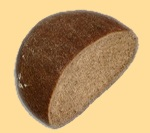
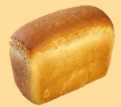
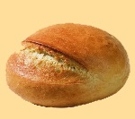
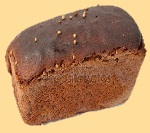
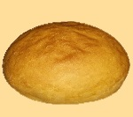
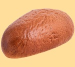
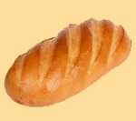
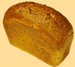
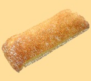
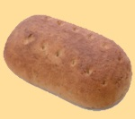

Наша продукция:

-
Хлеб Пряный подовый -
Срок годности : 120 часов
Масса нетто: 330 г.
Хлеб Пряный подовый - хлеб из ржаной муки с добавлением солода и пикантным кориандра, выпекается с точным соблюдением условий производства заварных хлебов.

-
Хлеб Семейный -
Срок годности : 120 часов
Масса нетто: 300 г.
Ржано-пшеничный заварной хлеб с добавленем тмина, выпекаемый на специальной ржаной солодовой закваске с полным сооблюдением технологии.

-
Паляница -
Срок годности : 72 часа
Масса нетто: 600 г.
Паляница - пшеничный украинский каравай, представляющий собой подовый круглый хлеб с надрезом с выраженым козырьком. Паляница выпекалась в Украине по особым случаям как обрядовый хлеб, символ солнца, гостеприимства и благополучия.

-
Хлеб Бородинский -
Срок годности : 120 часов Масса нетто: 300 г.
Штук в лотке: 20шт.
Бородинский - один из любимейших ржано-пшеничных сортов.Особенностью производства этого хлеба является внесение специальной заварки из ферментированного солода пророщенного зерна ржи, патоки и кориандра в тесто.

-
Хлеб Столовый подовый -
Срок годности: 36 часов
Масса нетто: 700 г.
Традиционный круглый ржано-пшеничный хлеб из двух сортов муки.

-
Хлеб Ароматный -
Срок годности : 120 часов
Масса нетто: 300 г.
Хлеб из пшеничной муки на ржаной ферментированной закваске с ароматом кориандра

-
Батон Нарезной -
Срок годности: 96 часов
Масса нетто: 350 г.
Белый хлеб из муки высшего сорта незаменимый в каждой семье, выпекаемый традиционным способом, пышный и мягкий.

-
Хлеб Украинский Формовой -
Срок годности : 36 часов
Масса нетто: 700 г.
Традиционный знакомый с детства хлеб из смеси пшеничной и ржаной муки. Без красителей и консервантов.

-
Лепешка Чиаббата итальянская -
Срок годности 72 часа
Масса нетто: 210 г.
Традиционный итальянский дрожжевой хлеб.Его особенность - золотистая хрустящая корочка и пышный мякиш с крупными, неоднородными порами. Используется в сетях быстрого питания для приготовления сэндвичей. Благодаря оригинальной рецептуре долго не черствеет.

-
Хлеб Литовский светлый -
Срок годности: 120 часов
Масса нетто: 200 г.
Заварной хлеб пшенично-ржаной, выпекаемый в каменном поду. Заварной хлеб, как пекут в Литве, имеет мягкий плотный мякиш высокой влажности за счет технологии жидких заквасок, благодаря которой он приобретает насыщенный вкус и густой аромат. Слегка жгучий, теплый, горьковато-пряный аромат тмина придает хлебу незабываемый вкус.